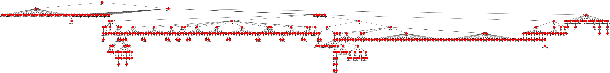

xmlPyParser. Быстрый старт¶
xmlPyParser - это программа написанная на языке программирования Python. xmlPyParser является именно инструментом парсинга, потому что:
- может быть запущен как конечное консольное приложение для анализа структуры xml источника и извлечения данных из него.
- может быть реализован как приложение с графическим (оконным) интерфейсом,
- может быть импортирован в другие скрипты Python в виде класса,
- может быть запущен на сервере в качестве Web-приложения.
Мы постарались сделать использование парсера максимально простым и не требующим каких-либо глубоких и специальных знаний. Но некоторые вещи Вам все-таки знать необходимо.
Анализ структуры источника xml¶
- Нужно знать
- Любой источник данных xml имеет древовидную структуру
- Все страницы любого сайта, которые Вы видите в своем браузере являются xml источником данных, а точнее его подвида - html. А значит все что отображено на странице сайта - сохранено в древовидной структуре.
- Чтобы указать парсеру какие данные нужно извлечь, необходимо задать путь к этим данным, начиная от корня дерева
xmlPyParser предоставляет два способа определения пути к нужным данным: графический и консольный.
Графический способ наглядно отражает структуру всего дерева источника xml и позволяет быстро определить путь к любым данным источника
| Пример_1: | Необходимо отобразить структуру данных новостной ленты сайта Lenta.ru. Для этого просто введем команду |
|---|
xmlPyParser -getTree url='https://lenta.ru/rss'
В результате парсер сгенерирует графический файл (png) наглядно отражающий структуру xml источника
Из рисунка легко понять, что в заданном источнике xml по пути rss/channel/description сохранены данные ___, по пути rss/channel/item/description сохранены ___ а перейдя по пути rss/channel/item/pubDate мы узнаем дату и время появления новости
Графический способ анализа структуры источника xml не удобен для сильно разветвленных источников. К таковым прежде всего относятся страницы сайтов, сохраняющие данные в формате html. Например, вот так выглядит структура страницы сайта https://www.avito.ru, содержащая объявления купли-продажи
Разобраться из рисунка, по какому пути находятся нужные дам данные (например, заголовок объявления) практически невозможно.
Поэтому, при определении пути к данным в сильно разветвленной структуре источника xml лучше воспользоваться консольным способом. Поясним его работу на примере
| Пример_2: | Необходимо узнать путь, по которому сохранены заголовки объявлений, отражающихся на страницах сайта Avito.ru |
|---|
Для этого открываем страницу сайта с объявлениями (регион не важен), берем первое попавшееся объявление и запоминаем что написано в его заголовке, например, “Багажник на крышу”
Теперь запускаем xmlPyParser передав ему два параметра 1) адрес страницы сайта Avito.ru, на котором расположены объявления, 2) текст заголовка объявления
xmlPyParser -getPath url='https://www.avito.ru/rostov-na-donu' text='Багажник на крышу'
Программа вернет примерно такой результат
html/body/div/div/div/div/div/div/div/div/a
Это и будет путь, по которым сохранены заголовки объявлений на сайте Avito.ru
Теперь, чтобы извлечь из страницы сайта заголовки всех объявлений, достаточно ввести команду
xmlPyParser -getData url='https://www.avito.ru/rostov-na-donu' path="html/body/div/div/div/div/div/div/div/div/a"
Извлечение данных¶
- Нужно знать
- по одному и тому же пути дерева может находиться несколько элементов данных, имеющих различное значение. Предыдущий пример наглядно это демонстрирует: извлекая значения источника по пути “html/body/div/div/div/div/div/div/div/div/a” мы получаем не один заголовок объявления (‘Багажник на крышу’ для которого мы определяли путь), а все заголовки объявлений расположенных на странице
- по своей природе, структуры данных xml и html сильно различаются: совокупность элементов находящихся на одном уровне xml источника является набором данных одного типа. В то же время, совокупность элементов, находящихся на одном уровне html следует, как правило, рассматривать как набор данных, каждый из которых имеет свой уникальный тип. Поэтому при извлечении данных необходимо указывать тип источника данных (xml или html). Проиллюстрируем сказанное на примере.
| Пример_3: | Возьмем новостную ленту сайта http://inosmi.ru. Скорее всего, данные, сохранены в данном источнике в формате xml (впрочем, как и у всех новостных лент). Запустим парсер для данного источника со следующими параметрами |
|---|
xmlPyParser -getData url='http://inosmi.ru/export/rss2/index.xml' path="rss/channel/item" source_type="xml"
В результате парсер выдаст нам список новостей, каждая из которых содержит поля с соответствующими значениями.
- title - заголовок новости
- link - ссылка на новость
- description - описание новости
- guid - ___
- pubDate - дата публикации
- category - категория новости
Т.е. мы получили набор однотипных данных, каждый элемент которого является отдельной новостью.
| Пример_4: | А теперь попробуем получить описание вакансий, размещенных на сайте http://hh.ru. |
|---|
При помощи функции парсера getPath определяем, что путь для описания вакансий - “html/body/div/div/div/div/div/table/tr/td/div/div/table/tr/td/div/div/div/div/div”.
Пробуем извлечь данные, находящиеся по данному пути
xmlPyParser -getData url='https://rostov.hh.ru/search/vacancy?text=&area=76' path="html/body/div/div/div/div/div/table/tr/td/div/div/table/tr/td/div/div/div/div/div" source_type="html"
В результате, помимо нужных нам данных парсер вернет много дополнительной информации, расположенной по тому же пути html страницы.
Для того, чтобы исключить вывод парсером ненужной информации задействуем атрибуты
- Нужно знать
- каждый элемент xml и html источника может иметь атрибуты. В парсинге атрибуты имеют двойное назначение: а) они могут содержать значения уточняющие путь к необходимым данным, б) сами атрибуты могут содержать необходимые данные
Узнать, какие атрибуты содержит каждый элемент источника по указанному пути
xmlPyParser -getData url='https://rostov.hh.ru/search/vacancy?text=&area=76' path="html/body/div/div/div/div/div/table/tr/td/div/div/table/tr/td/div/div/div/div/div" source_type="html" attrib='*'
В этой команде мы указываем парсеру, что кроме данных, хранящихся в элементах по заданному пути, необходимо вывести также все атрибуты каждого элемента, расположенного по данному пути.
Из полученных результатов видно, что элемент содержащий описание вакансии (см. условие примера 4) имеет уникальный атрибут, которого нет у остальных элементов, находящихся по заданному пути имя атрибута ‘data-qa’, значение - ‘vacancy-serp__vacancy_snippet_responsibility’
теперь нам осталось только уточнить путь, по которому парсеру необходимо извлекать данных из исходного источника
А теперь проиллюстрируем, как извлечь необходимые данные, если их значения сохранены в атрибутах элементов источника xml.
| Пример_6: | В качестве источника возъмем ответ API сервиса геокодирования http://nominatim.openstreetmap.org. Если запустить парсер с такими параметрами |
|---|
xmlPyParser -getData url='http://nominatim.openstreetmap.org/search?q=Ростов&format=xml' path="searchresults/place" source_type="xml"
то в результате мы получим пустые значения. Потому что вся информация хранится в атрибутах элементов. А если мы запустим парсер с такими параметрами
xmlPyParser -getData url='http://nominatim.openstreetmap.org/search?q=Ростов&format=xml' path="searchresults/place" source_type="xml" attib='display_name, lon, lat'
то парсер извлечет из атрибутов 1) наименование найденной местности, 2) ее широту и долготу
Резюме¶
Итак, для извлечения данных с помощью xmlPyParser Вам необходимо выполнить несколько простых шагов:
- Определяем адрес источника xml (путь к файлу на диске и адрес ресурса в Интернет) и тип источника (xml или html). Некоторые источники данных указаны здесь
- При помощи xmlPyParser узнаем пути доступа к нужным нам данным
- Запускаем парсер, указав ему путь к источнику xml (html) данных и пути к элементам источника, содержащем необходимые данные
Протестировать базовый функционал программы xmlPyParser можно на сервере ___
Ознакомиться со всеми возможностями парсера xmlPyParser можно здесь ___